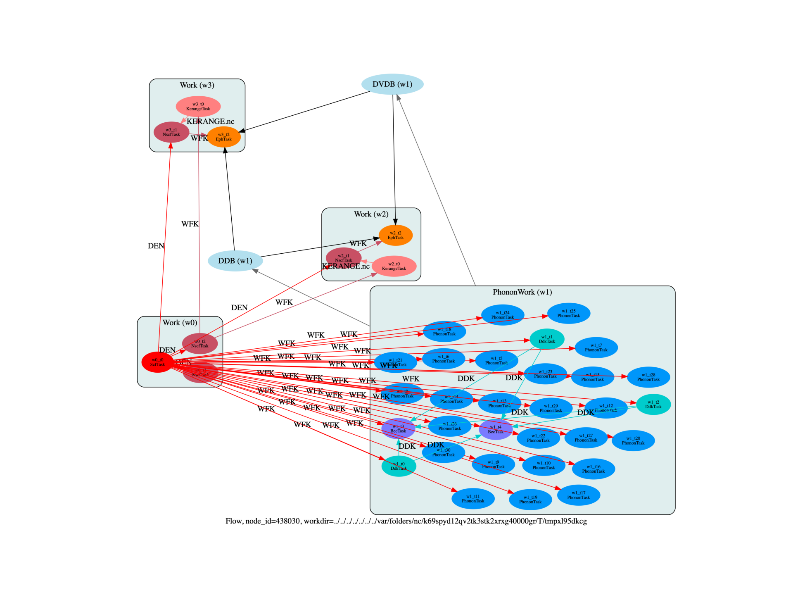

Note
Click here to download the full example code or to run this example in your browser via Binder
Flow for phonon-limited mobilities in semiconductors¶
This flow computes the phonon-limited mobility in AlAs. using different dense k/q meshes
Out:
<KerangeTask, node_id=438077, workdir=../../../../../../../var/folders/nc/k69spyd12qv2tk3stk2xrxg40000gr/T/tmpxl95dkcg/w2/t0>: setting prtwf to -1
<KerangeTask, node_id=438081, workdir=../../../../../../../var/folders/nc/k69spyd12qv2tk3stk2xrxg40000gr/T/tmpxl95dkcg/w3/t0>: setting prtwf to -1
import sys
import os
import abipy.data as abidata
import abipy.abilab as abilab
import abipy.flowtk as flowtk
import abipy.core.abinit_units as abu
def build_flow(options):
# Working directory (default is the name of the script with '.py' removed and "run_" replaced by "flow_")
if not options.workdir:
options.workdir = os.path.basename(sys.argv[0]).replace(".py", "").replace("run_", "flow_")
# Initialize the flow
flow = flowtk.Flow(workdir=options.workdir, manager=options.manager)
# Initialize the tmesh, sigma_kerange, sigma_erange and dense meshes for the eph integrations
tmesh = [300, 300, 1]
sigma_kerange = [0, 0.5 * abu.eV_Ha] # 0.5 eV range for the WFK of electrons
sigma_erange = [0, 0.25 * abu.eV_Ha] # 0.25 eV range for the EPH computation for electrons
dense_meshes = [[30, 30, 30],
[40, 40, 40]]
# Initialize the structure and pseudos
structure = abidata.structure_from_ucell("AlAs")
pseudos = abidata.pseudos("13al.981214.fhi", "33as.pspnc")
# Ground-state computation for 1) the phonons and 2) the WFK generation
scf_input = abilab.AbinitInput(structure, pseudos=pseudos)
scf_input.set_vars(
nband=8,
ecut=2.0,
ngkpt=[4, 4, 4],
shiftk=[0, 0, 0],
tolvrs=1.0e-10,
diemac=9.0,
prtden=1,
#iomode=3,
)
# Initialize the first work and add the ground-state task
work0 = flowtk.Work()
work0.register_scf_task(scf_input)
# Band structure calculation to make sure everything is OK
# Also allows to compare the results obtained with abitk to
# check the SKW interpolation works as needed
bs_input = scf_input.make_ebands_input(tolwfr=1e-12, ndivsm=10, nb_extra=5)
bs_input.set_vars(nstep=100, nbdbuf=1)
work0.register_nscf_task(bs_input, deps={work0[0]: "DEN"})
# NSCF input for the WFK needed to interpolate with kerange
nscf_input = abilab.AbinitInput(structure, pseudos)
nscf_input.set_vars(
ecut=2,
nband=8,
iscf=-2,
tolwfr=1e-20,
prtwf=1,
ngkpt=[16, 16, 16], # Should be dense enough so that the kerange interpolation works
shiftk=[0.0, 0.0, 0.0],
)
work0.register_nscf_task(nscf_input, deps={work0[0]: "DEN"})
flow.register_work(work0)
# Add the phonon work to the flow
ddb_ngqpt = [4, 4, 4]
ph_work = flowtk.PhononWork.from_scf_task(work0[0], qpoints=ddb_ngqpt,
is_ngqpt=True, with_becs=True, with_quad=False)
flow.register_work(ph_work)
# We loop over the dense meshes
for i, sigma_ngkpt in enumerate(dense_meshes):
# Use the kerange trick to generate a WFK file
multi = nscf_input.make_wfk_kerange_inputs(sigma_kerange=sigma_kerange,
sigma_ngkpt=sigma_ngkpt)
kerange_input, wfk_input = multi.split_datasets()
work_eph = flowtk.Work()
work_eph.register_kerange_task(kerange_input, deps={work0[2]: "WFK"})
work_eph.register_nscf_task(wfk_input,
deps={work0[0]: "DEN", work_eph[0]: "KERANGE.nc"})
# Generate the input file for the transport calculation.
# Use ibte_prep = 1 to activate the iterative BTE.
eph_input = wfk_input.make_eph_transport_input(ddb_ngqpt=ddb_ngqpt,
sigma_erange=sigma_erange,
tmesh=tmesh,
eph_ngqpt_fine=sigma_ngkpt,
ibte_prep=1)
# We compute the phonon dispersion in the EPH code to be able to check they are ok.
if i == 0:
eph_input.set_qpath(20)
work_eph.register_eph_task(eph_input,
deps={work_eph[1]: "WFK", ph_work: ["DDB", "DVDB"]})
flow.register_work(work_eph)
flow.allocate(use_smartio=True)
return flow
# This block generates the thumbnails in the AbiPy gallery.
# You can safely REMOVE this part if you are using this script for production runs.
if os.getenv("READTHEDOCS", False):
__name__ = None
import tempfile
options = flowtk.build_flow_main_parser().parse_args(["-w", tempfile.mkdtemp()])
build_flow(options).graphviz_imshow()
@flowtk.flow_main
def main(options):
"""
This is our main function that will be invoked by the script.
flow_main is a decorator implementing the command line interface.
Command line args are stored in `options`.
"""
return build_flow(options)
if __name__ == "__main__":
sys.exit(main())
Total running time of the script: ( 0 minutes 2.711 seconds)